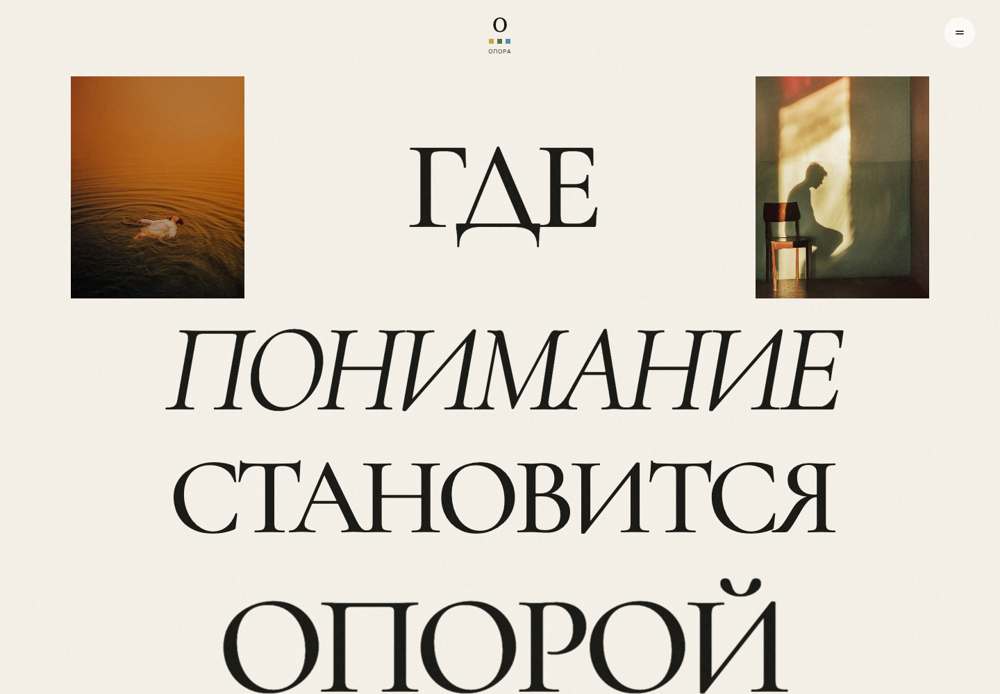
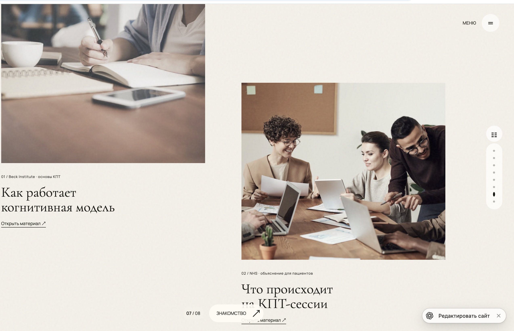
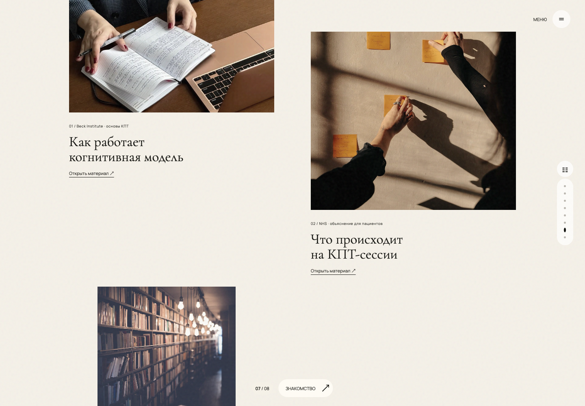
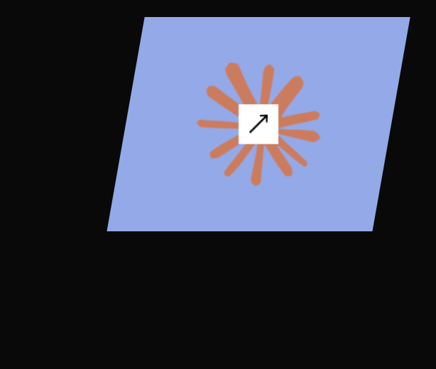
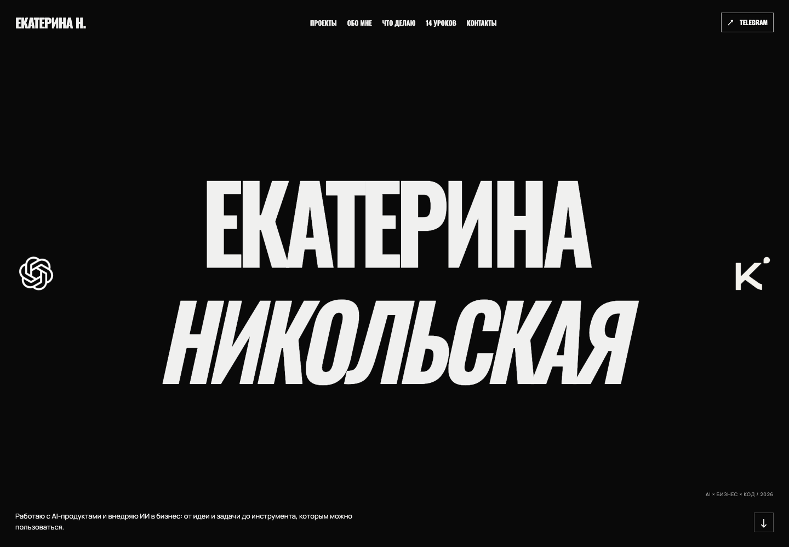
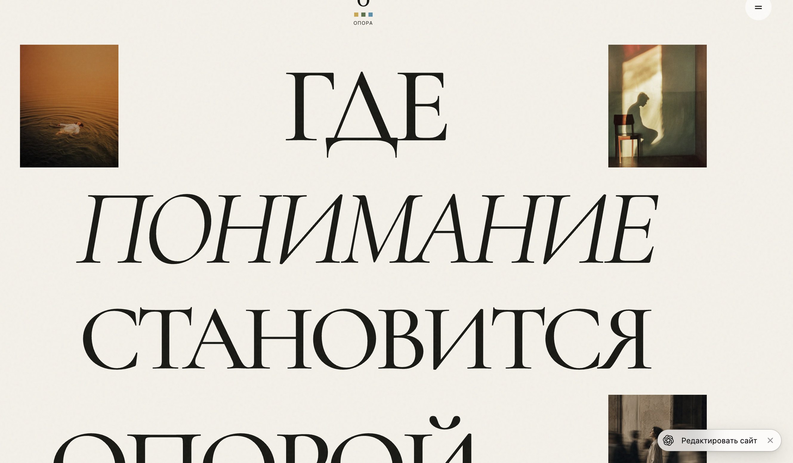
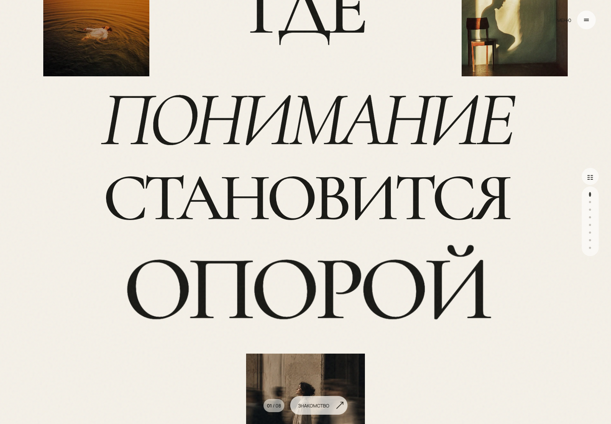
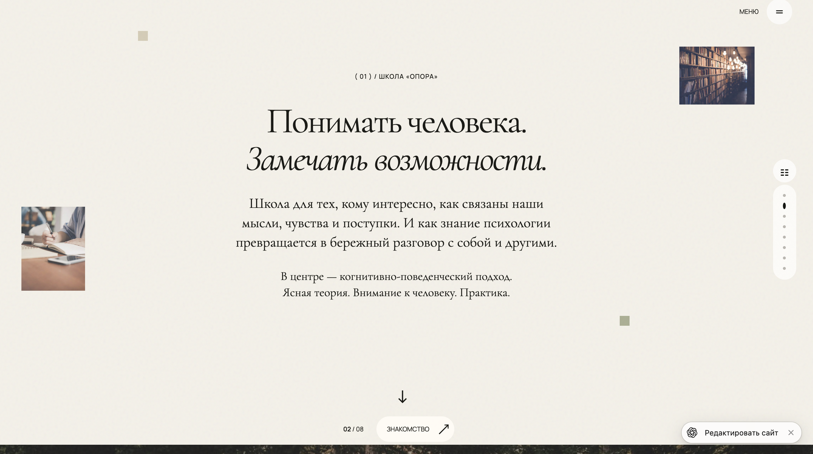
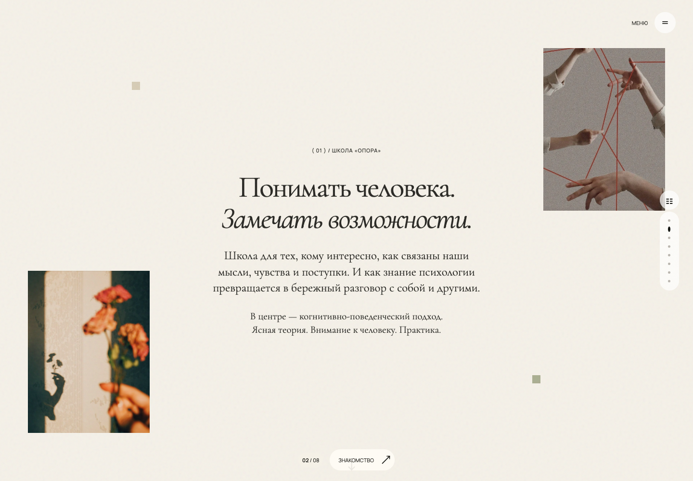

Ваш первый сайт с ИИ — @nikolskaya.ai@NIKOLSKAYA.AI УРОК 01 / ОБНОВЛЁННЫЙ ГАЙД
Ваш первый
сайт с ИИ.
Урок 1. От пустой папки
до своего готового сайта.

САЙТ-ВИЗИТКА
САЙТ ПРОЕКТА
Свои тексты. Свои фотографии. Готовые промпты.
Без опыта программирования.
@nikolskaya.ai / 1
@NIKOLSKAYA.AI НАЧНИТЕ ЗДЕСЬ
Два примера.
Ваше содержание.
01 / Личный сайт
Имя слева, ваш аватар справа, логотипы в одну линию и чёрный фон.

02 / Сайт проекта
Редакционная типографика, фотоколлаж и навигация по главам. Учебный пример — вымышленная школа «Опора».
В промптах замените всё в квадратных скобках своими данными. Сайты-примеры нужны как визуальный ориентир.
@nikolskaya.ai / 2
@NIKOLSKAYA.AI МАРШРУТ
Как устроена работа
01Соберите материалы
Имя или название компании, тексты, фото и контакты.
02Откройте Codex
Выберите папку, где появятся файлы вашего сайта.
03Добавьте навыки
Установите инструкции для структуры и дизайна.
04Отправьте промпт
Выберите визитку или компанию и заполните свои данные.
05Проверьте и сохраните
Публикация на GitHub и деплой — на втором уроке.
Промпты в PDF можно выделять и копировать. Если копирование добавило лишние переносы, используйте приложенный текстовый файл.
@nikolskaya.ai / 3
@NIKOLSKAYA.AI ШАГ 01
Подготовьте материалы
Создайте на компьютере пустую папку, например Мой сайт. В отдельную папку Материалы сложите фотографии и логотип. Оригиналы сохраните у себя отдельно. Переименуйте файлы понятно: portrait.jpg, work-01.jpg, product-01.png и так далее.
Для сайта-визитки нужны: имя, занятие в одном предложении, 2–4 направления работы, короткий рассказ о себе, основная ссылка для связи и портрет или готовый 3D-аватар для первого экрана. Работы или отзывы добавляйте только если они настоящие и их можно публиковать. Если аватара нет, используйте своё фото или создайте изображение по промпту из раздела про 3D.
Для сайта школы, студии или проекта нужны: название, описание, аудитория, направления, контактная ссылка и 3–6 собственных фотографий. Логотип необязателен. Год основания, проекты, города, клиенты и результаты нужны только тогда, когда вы можете их подтвердить. Не переносите фотографии или контакты с сайта-примера на свой сайт.
Укажите один главный способ связи: полную ссылку https://t.me/..., адрес почты для mailto: или номер для tel:. Кнопка без настоящего адреса выглядит рабочей, но разочарует посетителя.
@nikolskaya.ai / 4
@NIKOLSKAYA.AI ШАГ 02
Установите приложение и откройте папку
- Скачайте настольное приложение ChatGPT для своей системы, установите и войдите в аккаунт. В новом чате выберите Codex и откройте созданную папку
Мой сайт. В этой папке Codex сможет создавать и менять файлы. Это соответствует официальному быстрому старту.
- Создайте аккаунт GitHub, если его ещё нет. Пока ничего публиковать не нужно.
- Для установки навыков через команды скачайте LTS с официальной страницы Node.js и установите как обычную программу. После установки откройте новое окно терминала и проверьте команды
node --version и npx --version. Для Taste Skill нужен Node.js 22 или новее и Chrome, Edge либо Chromium. Если терминал пока пугает, используйте способ установки через запрос к Codex ниже.
Обычный чат ChatGPT может помочь написать текст и объяснить шаги, но для создания и проверки файлов в вашей папке используйте Codex в приложении. Альтернатива без локальной папки — ChatGPT Work с Sites, если Sites доступен вашему аккаунту; порядок публикации там другой.
@nikolskaya.ai / 5
@NIKOLSKAYA.AI ШАГ 03 / НАВЫКИ
Что такое скиллы
Навык (skill) — папка с инструкцией SKILL.md и иногда скриптами для проверки. Codex видит установленный навык и применяет его к подходящей задаче. Подробнее — в официальной документации OpenAI.
| Навык |
Для чего |
Исходники и инструкция |
landing-page-design |
Помогает собрать бриф, структуру и тексты страницы |
AI Design Skills |
design-taste-frontend |
Помогает довести композицию, изображения и проверку в браузере |
Taste Skill |
hallmark |
Альтернативный дизайн-подход и проверка шаблонного вида |
Hallmark |
Для первого сайта достаточно landing-page-design и одного визуального навыка — Taste Skill или Hallmark. Все три можно установить, но не просите одновременно применять два разных дизайн-подхода к одной странице: у них разные правила. Отсутствие навыка не мешает сделать простой сайт; оно лишь убирает дополнительный рабочий процесс.
Выберите один способ установки на следующих страницах. Устанавливать один и тот же навык всеми способами не нужно.
@nikolskaya.ai / 6
@NIKOLSKAYA.AI ШАГ 03 / ПРОСТОЙ СПОСОБ
Попросите Codex
установить навыки
В Codex откройте новый чат и отправьте:
Используй встроенный $skill-installer. Установи для моего пользователя, если ещё не установлены:
— landing-page-design из https://github.com/elayadesign/ai-design-skills/tree/main/skills/landing-page-design
— design-taste-frontend из https://github.com/Leonxlnx/taste-skill/tree/main/skills/taste-skill
— hallmark из https://github.com/Nutlope/hallmark/tree/main/skills/hallmark
Прочитай инструкции репозиториев, проверь точные папки навыков и сообщи, что установлено. Если какой-то навык не удалось установить, назови причину. Не создавай сайт на этом шаге.
Встроенный $skill-installer умеет скачивать навыки из GitHub. После установки попросите в следующем сообщении проверить доступность навыков. Если они не появились, начните новый чат или перезапустите приложение. Не устанавливайте их повторно без необходимости. Это описано в документации OpenAI о навыках.
@nikolskaya.ai / 7
@NIKOLSKAYA.AI ШАГ 03 / АЛЬТЕРНАТИВА
Установка вручную
Через терминал
Откройте терминал и запускайте команды по одной. -g означает «для всех ваших проектов», -a codex выбирает Codex. Команды основаны на инструкциях авторов Taste Skill, AI Design Skills и Hallmark.
npx skills add elayadesign/ai-design-skills --skill landing-page-design -a codex -g
npx skills add https://github.com/Leonxlnx/taste-skill --skill design-taste-frontend -a codex -g
npx skills add nutlope/hallmark --skill hallmark -a codex -g
Если программа спрашивает подтверждение, прочитайте список файлов и подтвердите установку. После неё начните новый чат в Codex и отправьте: Какие из навыков landing-page-design, design-taste-frontend и hallmark доступны в этом чате? Если npx не найден, установите Node.js LTS и откройте новое окно терминала. Если браузерная проверка Taste Skill не запускается, установите Chrome и попросите Codex использовать доступный браузер; не выдавайте такую проверку за выполненную, пока она не прошла.
Как скачать ZIP с GitHub
- Откройте репозиторий автора по ссылке из таблицы навыков. Перейдите на главную страницу репозитория.
- Нажмите Code → Download ZIP и распакуйте архив.
- Внутри найдите
skills/landing-page-design, skills/taste-skill или skills/hallmark — по выбранному репозиторию. В папке должен быть SKILL.md. Сам ZIP ещё не означает установку.
- Передайте Codex путь к распакованной папке и отправьте запрос ниже.
Установи навык из локальной папки [ПОЛНЫЙ ПУТЬ]. Проверь SKILL.md и сохрани все необходимые файлы навыка. Сообщи, куда установлен навык и как проверить его доступность.
@nikolskaya.ai / 8
@NIKOLSKAYA.AI ШАГ 04 / ВИЗУАЛЬНЫЙ ОРИЕНТИР
Сайт-визитка
Выберите свою профессию, тексты, фото и контакты. Замените все квадратные скобки. Пример показывает композицию; имя Екатерины, её проекты и аватар переносить в свой сайт не нужно.
Открыть сайт-пример ↗
Далее — полный промпт на двух страницах. Скопируйте обе части в одно сообщение, заполните поля и приложите фотографии.
@nikolskaya.ai / 9
@NIKOLSKAYA.AI ШАГ 04 / ПРОМПТ 1 ИЗ 2
Сайт-визиткаЧасть 1 — ваши данные
Создай с нуля в открытой папке мой одностраничный сайт-визитку. Сам создай файлы, запусти локально и проверь результат. Объясняй действия понятно новичку.
Референс композиции: https://ekaterinaglowme.github.io/ai-sites-showcase/nikolskaya-romans/
Хочу чёрный первый экран, крупную выразительную типографику: имя и фамилия слева в две строки, справа мой портрет или 3D-аватар. Ниже слева короткое описание и ряд логотипов инструментов, которыми я действительно пользуюсь. Верхняя ссылка с моим именем, заголовок, логотипы и описание должны начинаться на одной вертикальной линии. Остальные секции чередуют светлый и тёмный фон. Не копируй чужие имя, тексты, фото, контакты и кейсы.
МОИ ДАННЫЕ
Имя: [ВАШЕ ИМЯ]
Фамилия или название: [ВПИШИТЕ]
Профессия и специализация: [ВПИШИТЕ]
Кому и с чем помогаю: [ВПИШИТЕ]
Короткое описание под именем: [1–2 ПРЕДЛОЖЕНИЯ]
Обо мне: [3–5 ПРЕДЛОЖЕНИЙ ИЛИ ТЕЗИСЫ]
Направления: [1–4 НАЗВАНИЯ И КОРОТКИЕ ОПИСАНИЯ]
Реальные работы: [НАЗВАНИЯ, ОПИСАНИЯ, ФОТО ИЛИ «НЕТ»]
Основное действие кнопки: [НАПИСАТЬ / ОБСУДИТЬ ПРОЕКТ / ДРУГОЕ]
Контакт: [ПОЛНЫЙ URL, EMAIL ИЛИ ТЕЛЕФОН]
Акцентный цвет: [ЦВЕТ ИЛИ «ХОЛОДНЫЙ ГОЛУБОЙ»]
ФАЙЛЫ
Мой портрет или готовый 3D-аватар: [ИМЯ ФАЙЛА]
Мои инструменты и их логотипы: [ПЕРЕЧЕНЬ И ФАЙЛЫ ИЛИ «НЕ НУЖНЫ»]
Изображения работ: [ФАЙЛ → НАЗВАНИЕ РАБОТЫ ИЛИ «НЕТ»]
@nikolskaya.ai / 10
@NIKOLSKAYA.AI ШАГ 04 / ПРОМПТ 2 ИЗ 2
Сайт-визиткаЧасть 2 — требования к сайту
Используй landing-page-design для структуры и design-taste-frontend для визуальной работы, если они установлены. Если их нет, выполни задачу по этому ТЗ. Все изображения сохрани внутри папки сайта. Используй мой готовый аватар без изменения лица.
Структура: шапка; первый экран; мои работы, если есть; обо мне; направления; контакты. Не придумывай отзывы, клиентов, цифры, квалификацию, результаты и проекты. Если данных для раздела нет, убери его.
На компьютере имя слева, изображение справа без наложения. На телефоне сначала имя, затем аватар, описание и контакт. Логотипы поставь в одну линию с равными отступами; на узком экране аккуратно адаптируй. Не используй логотипы как доказательство партнёрства.
Можно добавить лёгкий наклон аватара за курсором. Это PNG, а не настоящая 3D-модель: не обещай вращение вокруг головы. Для prefers-reduced-motion отключи движение. Не закрывай кнопки изображением.
Сделай статический сайт: index.html, style.css, script.js при необходимости, папка images. Пути относительные: ./style.css, ./images/… Все кнопки ведут к моим контактам или существующим секциям. Не создавай форму без отправки. Проверь ширины 1440, 768 и 390 px, загрузку фото, ссылки, читаемость, фокус клавиатуры и отсутствие горизонтального скролла. Покажи скриншоты и путь к папке. Пока не публикуй — деплой будет на втором уроке.
Сначала согласуйте первый экран. Если композиция понравилась, попросите продолжить остальные разделы в том же стиле.
@nikolskaya.ai / 11
@NIKOLSKAYA.AI ШАГ 05 / ВИЗУАЛЬНЫЙ ОРИЕНТИР
Сайт проекта
«Опора» — вымышленная школа в учебном примере. Этот промпт подойдёт вашей школе, студии, компании или другому проекту. Подставьте свою тему и данные; текст о психологии не нужен, если ваш проект о другом.
Открыть сайт-пример ↗
Далее — полный промпт на двух страницах. Скопируйте обе части в одно сообщение, заполните поля и приложите фотографии.
@nikolskaya.ai / 12
@NIKOLSKAYA.AI ШАГ 05 / ПРОМПТ 1 ИЗ 2
Сайт проектаЧасть 1 — ваши данные
Создай с нуля одностраничный презентационный сайт моего проекта в открытой папке. Сам создай файлы, запусти локально и проверь. Объясняй действия простыми словами.
Референс: https://ekaterinaglowme.github.io/ai-sites-showcase/opora/
Мне нравится редакционная подача: тёплый светлый фон с едва заметной текстурой бумаги, крупные заголовки с засечками, курсивные акценты, фотоколлаж, свободные поля, круглое меню и навигация по разделам. Возьми эти принципы, но создай композицию под мои материалы. Не копируй название «Опора», её тексты и фотографии.
МОЙ ПРОЕКТ
Название: [ВПИШИТЕ]
Тема и суть: [1–2 ПРЕДЛОЖЕНИЯ]
Для кого: [АУДИТОРИЯ]
Что человек получает: [ПОНЯТНОЕ ОПИСАНИЕ]
Главный заголовок: [ФРАЗА ИЛИ «ПРЕДЛОЖИ 3 ВАРИАНТА»]
О проекте: [ТЕКСТ ИЛИ ТЕЗИСЫ]
Направления, услуги или программы: [2–4 НАЗВАНИЯ И ОПИСАНИЯ]
Как устроена работа или обучение: [РЕАЛЬНЫЕ ЭТАПЫ]
Подтверждённые факты: [ФАКТЫ ИЛИ «НЕТ»]
Полезные материалы: [НАЗВАНИЯ И ССЫЛКИ ИЛИ «НЕТ»]
Контакт и основная кнопка: [ПОЛНЫЙ URL И ТЕКСТ КНОПКИ]
ФАЙЛЫ И ВИЗУАЛ
Фото первого экрана: [3 ФАЙЛА И ЧТО НА НИХ]
Фото раздела «О проекте»: [ФАЙЛЫ]
Фото направлений: [ФАЙЛ → КАКОЙ КАРТОЧКЕ СООТВЕТСТВУЕТ]
Логотип: [ФАЙЛ ИЛИ «НЕ НУЖЕН»]
Палитра: [ЦВЕТА ИЛИ ПРИЛОЖЕННЫЙ СКРИНШОТ]
Наложение текста на фото: [ДА / НЕТ]
@nikolskaya.ai / 13
@NIKOLSKAYA.AI ШАГ 05 / ПРОМПТ 2 ИЗ 2
Сайт проектаЧасть 2 — требования к сайту
Используй landing-page-design для структуры и design-taste-frontend для визуальной работы, если они установлены. Если нет — сделай по ТЗ. Сохрани мои фотографии локально. Не меняй их яркость, цвет и прозрачность без моего запроса.
Структура: первый экран; о проекте; направления; подход или этапы; полезные материалы, если есть; контакты. Число секций зависит от содержания. Не придумывай отзывы, лицензии, преподавателей, результаты, клиентов и цифры. Не копируй целиком чужие тексты. Если нужны факты из источников, кратко перескажи их и добавь ссылки.
На первом экране заголовок должен читаться целиком. Если разрешено наложение на фото, выбери размещение с достаточным контрастом. Если не разрешено, выдели под текст отдельное место. Не делай фотографии полупрозрачными для маскировки проблем композиции. На телефоне перестрой коллаж.
При скролле фотографии могут плавно смещаться вниз с разной скоростью. Последнее слово заголовка можно мягко увеличивать относительно центра экрана. Оно не должно уезжать в сторону. При prefers-reduced-motion отключи движение.
Сделай статический сайт: index.html, style.css, script.js и папка images. Используй относительные пути для GitHub Pages. Меню ведёт к существующим секциям, кнопки — к моим контактам или точным ссылкам. Не создавай форму без отправки. Проверь 1440, 768 и 390 px, загрузку фото, ссылки, читаемость и отсутствие горизонтального скролла. Покажи скриншоты и папку результата. Пока не публикуй — деплой будет на втором уроке.
Можно поменять тему, сохранив композицию: школа языков, интерьерная студия, мастерская, курс, сообщество. Попросите адаптировать смысл разделов, а не просто заменить название.
@nikolskaya.ai / 14
@NIKOLSKAYA.AI ШАГ 06 / ПРОВЕРКА
Проверьте результат и попросите исправления
Не нужно редактировать код вручную. Откройте локальную ссылку, которую дал Codex, и просмотрите всю страницу на компьютере и телефоне. Для исправлений используйте конкретный запрос:
Проверь готовый сайт в браузере на ширинах 1440 и 390 px. Исправь наложения изображений на текст, слишком тесные слова, обрезанные заголовки, неработающие изображения, горизонтальную прокрутку и ошибки в консоли. Проверь каждую кнопку и покажи мне таблицу «текст кнопки → точный адрес». После исправлений сделай новые скриншоты. Не меняй остальные согласованные разделы.
Если что-то выглядит не так, приложите скриншот и напишите: Исправь только выделенное на скриншоте: [ЧТО ИМЕННО]. Остальной макет сохрани. Это точнее, чем «сделай красивее».
@nikolskaya.ai / 15
@NIKOLSKAYA.AI ШАГ 06 / ДИЗАЙН И ПРАВКИ
Если дизайн не нравится — покажите на скриншоте
Прямо сделайте скриншот и скажите, что поправить. Не нужно знать названия шрифтов или разбираться в коде. Можно обвести место, поставить стрелку или написать «второй экран, заголовок справа».
- Откройте сайт и сделайте скриншот конкретного места.
- На Mac:
Shift + Command + 4. На Windows: Win + Shift + S. На телефоне используйте обычный снимок экрана.
- Прикрепите картинку к сообщению в Codex. Если можете, отметьте проблемное место.
- Напишите, что именно изменить и какой результат хотите получить.
- Попросите показать новый скриншот компьютера и телефона.
На скриншоте отметила место, которое мне не нравится. Исправь только его:
— [ГДЕ: первый экран / секция «Обо мне» / кнопка внизу]
— [ЧТО: слова сливаются / текст мелкий / фото закрывает заголовок]
— [КАК НАДО: увеличь пробелы / сделай крупнее / сдвинь фото вправо]
Остальные цвета, блоки и композицию сохрани. После правки проверь компьютер и телефон и покажи новые скриншоты.
Меняйте по одной группе вещей: сначала композицию, затем шрифты, затем цвета и детали. Так проще понять, какая правка улучшила результат. Перед большой переделкой попросите сохранить текущую версию отдельной копией.
@nikolskaya.ai / 16
@NIKOLSKAYA.AI ШАГ 06 / ДИЗАЙН И ПРАВКИ
Нужны другие цвета — найдите палитру в Pinterest
Откройте Pinterest, найдите понравившуюся палитру и пришлите её скриншот. Запросы для поиска: website color palette, cream black blue palette, «палитра для сайта», «оливковый бежевый палитра».
Не обязательно искать готовый сайт: подойдёт картинка с сочетанием цветов. Укажите, какой цвет куда применить. Если на палитре есть HEX-коды вроде #F5F1E8, скопируйте их — так цвет получится точнее. По скриншоту ИИ может только подобрать близкий оттенок.
Мне нравится палитра на прикреплённом скриншоте из Pinterest. Возьми из неё:
— самый светлый оттенок для основного фона;
— самый тёмный для текста;
— [ОПИШИТЕ ЦВЕТ] для кнопок и небольших акцентов.
Сначала выпиши выбранные HEX-коды. Примени палитру ко всему сайту, проверь читаемость текста и кнопок. Композицию, фотографии и тексты не меняй. Если точный оттенок со скриншота определить нельзя, подбери близкий и скажи об этом.
Для начала хватит нейтрального фона, контрастного текста и одного акцентного цвета. Важные кнопки должны быть заметны; светло-серый текст на светлом фоне лучше не использовать.
@nikolskaya.ai / 17
@NIKOLSKAYA.AI ШАГ 06 / ДИЗАЙН И ПРАВКИ
Как объяснить ИИ нужный стиль
Покажите пример и объясните, что именно в нём нравится. Слов «красиво», «дорого», «современно» мало: у каждого своё представление. Лучше дать 1–3 скриншота и описать конкретные признаки.
| Что описать |
Как сказать обычными словами |
| Общее ощущение |
Спокойный и сдержанный; яркий и смелый; тёплый и личный |
| Композиция |
Много свободного места; крупный заголовок; фото справа; текст слева |
| Шрифт |
Тонкий с засечками, как в журнале; простой без засечек; жирные большие заголовки |
| Цвета |
Молочный фон, почти чёрный текст и холодный голубой для акцентов |
| Изображения |
Крупные фотографии; вырезанные предметы; свободный коллаж |
| Формы |
Прямые углы; тонкие линии; округлые кнопки; минимум рамок |
| Движение |
Плавное появление при прокрутке; без постоянного вращения и прыжков |
Референс — это пример того, как должен выглядеть результат. Если на нём нравится только шрифт, так и напишите. Не просите скопировать всё, когда хотите взять лишь один элемент.
@nikolskaya.ai / 18
@NIKOLSKAYA.AI ШАГ 06 / ДИЗАЙН И ПРАВКИ
Готовый запрос про стиль
Хочу изменить визуальный стиль сайта. Прикладываю референсы и объясняю, что взять из каждого.
Скриншот 1: нравится [КОМПОЗИЦИЯ И РАЗМЕР ЗАГОЛОВКОВ].
Скриншот 2: нравится [ПАЛИТРА И ЦВЕТ КНОПОК].
Скриншот 3: нравится [РАСПОЛОЖЕНИЕ ФОТО / ШРИФТ / ДЕТАЛИ].
Общее ощущение: [СПОКОЙНЫЙ / РЕДАКЦИОННЫЙ / ТЕХНОЛОГИЧНЫЙ / ДРУГОЕ].
Фон: [ОПИШИТЕ]. Текст: [ОПИШИТЕ]. Акцент: [ОПИШИТЕ].
Шрифт: [С ЗАСЕЧКАМИ / БЕЗ ЗАСЕЧЕК, КРУПНЫЙ / СДЕРЖАННЫЙ].
Композиция: [ГДЕ ЗАГОЛОВОК, ФОТО И КНОПКА].
Не нравится: [ПЕРЕЧИСЛИТЕ: ТЕНИ, ГРАДИЕНТЫ, МЕЛКИЙ ТЕКСТ И Т. П.].
Сохрани мои тексты, контакты и фотографии. Сначала сделай первый экран в этом стиле для компьютера и телефона. Покажи скриншоты. После моего выбора перенеси стиль на остальные разделы. Перед переделкой сохрани текущую версию отдельной копией.
Пример понятного описания: «Хочу сайт как спокойный архитектурный журнал: молочный фон, чёрные тонкие заголовки с засечками, большие фотографии и много воздуха. Без цветных карточек и теней. Одна заметная кнопка вверху. На телефоне фото должно идти после заголовка».
Оценивайте не только красоту: имя и занятие должны читаться сразу, основное действие — быть заметным, а текст на телефоне — помещаться без обрезки.
@nikolskaya.ai / 19
@NIKOLSKAYA.AI ПРАКТИКА / ПРАВКА 01
Фотографии не закрывают текст
Реальная правка из истории работы: промежуточные версии, а не текущий вид сайта. Пример показывает, как объяснить изменение без дизайнерских терминов.
Было · скриншот
Стало · результат

Запрос для копирования
Оставь только три приложенные фотографии. Сделай их крупнее и расположи вокруг заголовка так, чтобы они не перекрывали буквы. Проверь первый экран на компьютере и телефоне.
Назовите количество картинок и укажите, что именно должно оставаться читаемым.
Это пример формулировки: замените названия, изображения и тексты своими.
@nikolskaya.ai / 20
@NIKOLSKAYA.AI ПРАКТИКА / ПРАВКА 02
Заменяем конкретные фотографии
Реальная правка из истории работы: промежуточные версии, а не текущий вид сайта. Пример показывает, как объяснить изменение без дизайнерских терминов.
Было · скриншот

Стало · результат

Запрос для копирования
В блоке материалов замени левую фотографию на приложенное фото с блокнотом, а правую — на фото со стикерами. Заголовки, ссылки и расположение карточек сохрани.
Прикладывайте скриншот блока и новые файлы в одном сообщении. Объясните, какой файл куда поставить.
Это пример формулировки: замените названия, изображения и тексты своими.
@nikolskaya.ai / 21
@NIKOLSKAYA.AI ПРАКТИКА / ПРАВКА 03
Два логотипа вместо наложений
Реальная правка из истории работы: промежуточные версии, а не текущий вид сайта. Пример показывает, как объяснить изменение без дизайнерских терминов.
Было · скриншот

Стало · результат

Запрос для копирования
На первом экране оставь только логотипы ChatGPT и Kimi. Размести их у противоположных краёв, около середины экрана. Убери смену и наложение логотипов. Они не должны закрывать имя и кнопки.
Просите исправить конкретный элемент, а затем проверить его на узком экране.
Это пример формулировки: замените названия, изображения и тексты своими.
@nikolskaya.ai / 22
@NIKOLSKAYA.AI ПРАКТИКА / ПРАВКА 04
Центрирование и движение
Реальная правка из истории работы: промежуточные версии, а не текущий вид сайта. Пример показывает, как объяснить изменение без дизайнерских терминов.
Было · скриншот

Стало · результат

Запрос для копирования
Слово «ОПОРОЙ» выровняй по центру всей ширины экрана. При прокрутке оно должно плавно увеличиваться относительно своего центра, без смещения влево. Фотографии не должны перекрывать слово.
Уточняйте, относительно чего центрировать элемент. Для анимации укажите действие пользователя и ожидаемое движение.
Это пример формулировки: замените названия, изображения и тексты своими.
@nikolskaya.ai / 23
@NIKOLSKAYA.AI ПРАКТИКА / ПРАВКА 05
Новые фото и нужный масштаб
Реальная правка из истории работы: промежуточные версии, а не текущий вид сайта. Пример показывает, как объяснить изменение без дизайнерских терминов.
Было · скриншот

Стало · результат

Запрос для копирования
В блоке о школе замени фото слева на цветы, справа — на руки с красной нитью. Увеличь фотографии, оставив свободное место вокруг текста. На телефоне перенеси фотографии ниже текста.
Не ограничивайтесь «красиво»: назовите размер, место и поведение на телефоне.
Это пример формулировки: замените названия, изображения и тексты своими.
@nikolskaya.ai / 24
@NIKOLSKAYA.AI ВИЗИТКА / СОБСТВЕННЫЙ ВИЗУАЛ
Имя слева.
3D-голова справа.
Не обязательно искать готовую фотографию. Можно сгенерировать отдельное изображение и добавить его на сайт. На примере — мой готовый 3D-аватар. Вы можете создать свой: приложить фото и описать нужную стилизацию.
- В чате с генерацией изображений отправьте промпт со следующей страницы.
- Если нужен ваш образ, приложите своё фото и добавьте: «Сохрани мои узнаваемые черты лица, измени только материал и свет».
- Скачайте понравившийся результат кнопкой скачивания изображения и сохраните в папку проекта.
- Прикрепите файл к запросу на обновление сайта.
- Проверьте первый экран на компьютере и телефоне.
3D здесь — стиль картинки. Изображение само по себе не становится интерактивной 3D-моделью. Для лёгкого движения можно отдельно попросить плавный параллакс.
@nikolskaya.ai / 25
@NIKOLSKAYA.AI ВИЗИТКА / ГОТОВЫЕ ПРОМПТЫ
Создайте и добавьте
свой визуал.
1. Создать изображение
Используй приложенное моё фото как референс внешности. Создай стилизованную парящую 3D-голову без тела, сохрани узнаваемые черты лица. Плавная округлая анатомия, слегка преувеличенные пропорции, спокойное выражение, глянцевые губы. Кожа с эффектом полированного фарфора: яркие блики, мягкое подповерхностное рассеивание, минимум микродеталей. Волосы — [ВАША ПРИЧЁСКА И ЦВЕТ], плавные объёмные пряди с блестящей поверхностью. Аксессуары — [ОЧКИ, НАУШНИКИ ИЛИ БЕЗ АКСЕССУАРОВ]. Качество рекламного CGI, мягкий кинематографичный свет, чистый игрушечный 3D-образ. Анфас. Голова и волосы целиком в кадре, с небольшими полями. Прозрачный фон, PNG. Без текста и водяных знаков.
2. Добавить на сайт
Обнови первый экран моего сайта-визитки. Слева размести [ИМЯ] и [ФАМИЛИЯ] в две строки, ниже — [КОРОТКОЕ ОПИСАНИЕ] и кнопку [ДЕЙСТВИЕ]. Справа поставь приложенное изображение 3D-головы крупно. Не перекрывай изображением текст и кнопки. Сохрани пропорции головы. Фон сайта согласуй с фоном картинки, чтобы не было заметной прямоугольной рамки. На телефоне: сначала имя и фамилия, затем изображение, описание и кнопка. Остальные разделы сохрани. Проверь читаемость и отсутствие горизонтального скролла.
Промпт адаптирован по присланному референсу. Замените поля в скобках своими данными. Очки и наушники необязательны. Если фон получился непрозрачным, попросите: «Удали только фон, сохрани лицо, волосы и аксессуары». Прикладывайте именно файл изображения, а не скриншот чата.
@nikolskaya.ai / 26
@NIKOLSKAYA.AI ДВИЖЕНИЕ / ЧЕСТНО О 3D
Картинка или
настоящая модель?
3D-аватар PNG — обычная картинка, нарисованная в объёмном стиле. В нашей визитке используется именно она.
Реакция на курсор — наклон всей картинки. Он делает экран живее, но не показывает затылок и новые ракурсы лица.
Видео показывает заранее созданное движение. Можно связать кадр с курсором, но это не свободно вращаемая модель.
Модель GLB содержит геометрию и материалы. Её можно вращать как объект в Blender. Для этого сначала нужен отдельный этап создания модели; одного PNG недостаточно.
Запрос для текущей картинки
Добавь моему PNG-аватару плавный наклон за курсором. Сделай эффект заметным, но без обрезки и наложения на текст. При уходе курсора возвращай в исходное положение. На телефоне и при уменьшении движения в настройках отключи эффект.
Для следующего шага: Meshy Image to 3D создаёт модель из изображения. Результат нужно проверить: сходство, волосы, очки и профиль могут потребовать доработки.
@nikolskaya.ai / 27
@NIKOLSKAYA.AI ПОЛЕЗНЫЕ ССЫЛКИ
Всё в одном месте
Сайты-примеры
Эти две ссылки публичные: посетителю не нужен аккаунт GitHub. Ваш локальный сайт пока доступен только на вашем компьютере.
Навыки и установка
Генерация картинки и установка навыка — разные вещи. Если imagegen уже есть в Codex, скачивать его повторно не нужно. В обычном чате с генерацией изображений можно отправить тот же промпт без установки навыков.
Справка
Интерфейсы и способы установки обновляются. Если пункт меню отличается, приложите скриншот и попросите Codex подсказать следующий шаг для вашей версии.
@nikolskaya.ai / 28
@NIKOLSKAYA.AI ШАГ 07
Продолжение — на втором уроке
На втором уроке будем публиковать сайт на GitHub и изучать деплой.
В первом уроке мы создали сайт и проверили его на компьютере. Сейчас достаточно сохранить готовую папку проекта, фотографии и понравившуюся версию дизайна.
Что будет дальше
- Разберёмся, что такое GitHub, репозиторий и коммит.
- Загрузим файлы сайта в свой репозиторий.
- Изучим деплой — публикацию сайта из файлов проекта в интернете.
- Настроим GitHub Pages и получим публичную HTTPS-ссылку.
- Научимся обновлять сайт и возвращаться к предыдущей версии.
Что подготовить ко второму уроку
— Готовую папку сайта с index.html, стилями и изображениями.
— Проверенную локальную версию, которая вам нравится.
— Аккаунт GitHub, если хотите зарегистрироваться заранее.
Локальная ссылка с localhost работает на вашем компьютере. Ссылка для других людей появится после деплоя во втором уроке.
Сохрани текущую согласованную версию сайта. Проверь, что все файлы и изображения находятся в папке проекта. Напиши, где она лежит и как снова открыть локальный сайт. Публиковать пока не нужно — это сделаем на втором уроке.
@nikolskaya.ai / 29
@NIKOLSKAYA.AI ШАГ 08
Частые проблемы
| Что случилось |
Что попросить у Codex |
| На локальном сайте нет оформления |
Проверь, что CSS подключён и все пути к изображениям ведут к существующим файлам. |
| Видна старая версия |
Проверь локальный сервер и кеш браузера. Обнови страницу и покажи текущую версию сайта. |
| С телефона заголовок обрезан |
Проверь ширину 390 px, перенеси заголовок и уменьшай размер только там, где это нужно. |
| Кнопка ведёт не туда |
Составь таблицу всех href и исправь кнопку [НАЗВАНИЕ] на [ТОЧНЫЙ URL]. |
| ИИ придумал проект или отзыв |
Удали неподтверждённый факт и проверь весь сайт на другие вымышленные утверждения. |
| Фото чужой компании показано как ваше |
Замени фото на мой файл [ИМЯ ФАЙЛА] или убери блок. Не называй иллюстрацию нашей работой. |
Критерий готовности: ваш сайт показывает именно ваши материалы, открывается локально, читается на мобильной ширине, а все кнопки ведут туда, куда вы ожидаете.
@nikolskaya.ai / 30